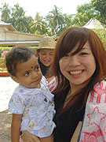
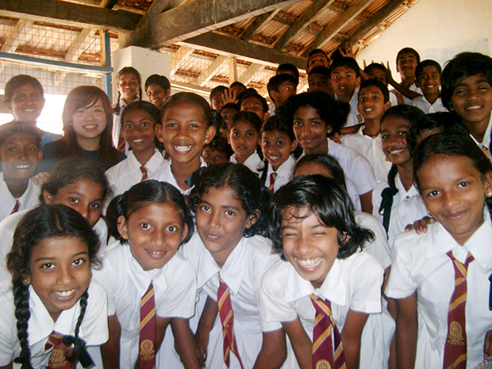
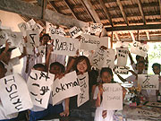
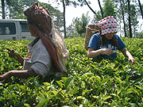

 かわいい赤ちゃんを抱っこ♪ |
おいしいココナッツ☆ |

「わたしにとって、スリランカで過ごしたこの1ヶ月は、貴重な体験の連続で、本当にかけがえのないものとなった。
わたしが、このプログラムに参加を決めた理由。
それは、発展途上国でホームステイをしながら英語が学べ、その上様々なボランティア体験が出来ることであった。
はじめに語学留学を行うことを決めた際、私の頭には、アメリカやカナダ、イギリス、オーストラリアなどの先進国の英語圏への留学という考えも実はあった。
しかし、先進国から学ぶのではなく、途上国から英語以外にも多くのことを学びたいと思いこのプログラムへの参加を決意した。
そして事実、私は多くのことをこの国・スリランカで学ぶことができた。
英語のレッスンでは、スリランカの文化・宗教についてや民族対立の問題、貧困や開発についてなど様々なトピックを先生とディスカッションした。
ほとんど会話中心のレッスンで、会話を通して、英語のみでなく様々なことを学ぶことができた。
宿題は、英語のニュースを聞きサマライズすることだったので、日本以外の様々なニュースをしることもできた。
ホームステイでは、スリランカ料理のつくり方やサリーの着方などを教えてもらったり、お買い物に一緒にいったり、私が国際協力や開発に興味を持っていることもあり、様々な低開発地域へ連れて行ってもらったりと、本当に自分の娘のように私に接してくれた。（食事風景の写真）
また、現地では、英語のレッスンの合間に様々なボランティア活動にも参加することができた。
 日本語教師の時！ |
 お習字をしました！ |
スリランカへ行くまでは、ほとんどこの国について知らなかった。
しかし、これらのことを通して、貧困とは何か、開発とは何か、豊かさとは何か、そして、宗教、民族、文化など様々なことを学び、考えさせられた。
そして、何よりも、沢山の人々に出会い、沢山の思い出と笑顔をもらうことができた。
英語の先生が私にこんなことを教えてくれた。
「仏教では、前世と現世と後世があり、今(現世)出会っている人たちとは、前世でもなんらかの形で出会っていて、後世でも必ず出会うことができる。だから、スリランカで出会った人たちと私は前世でも出会っていて、また必ず後世でもあうことができるのだ。」と。
私は、この言葉にとても感動した。
スリランカの人々は本当に人と人との繋がりを大切にしている。
本当にこの国で私は、人々の暖かさに触れ、皆の暖かさの中で日々すごすことが出来た。
貧困とは何なのであろうか？ 豊かさとは何なのであろうか？
日本は、発展と共に、自然や人々の繋がり・暖かさ・分け合いの精神を忘れているように感じた。
この国で過ごしていると、本当に多くのことに気づかされる。
今、私は、このプログラムに出会い参加することができ、本当によかったと確信している。
このプログラムを通し、出会った人々、そして、私達にこのプログラムを提供してくださった逢坂さんに本当に感謝の気持ちを伝えたいと思う。
そして、英語を学びたい人はもちろん、もし少しでも開発や国際協力、そして発展途上国に興味のある人は、是非このプログラムに参加してほしいと思う。
きっと多くのことを学び、気づくことができるのではないだろうか。
私はまた、是非このプログラムに参加したいと思っている。
東京女子大学 山中美樹
 紅茶工場で茶摘み体験☆ |
パソコンボランティア |